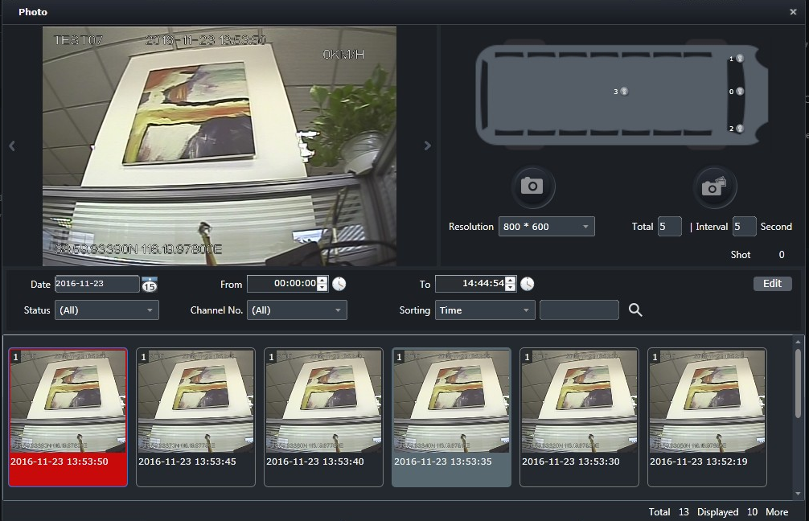

Tomar la foto
Tome las fotos para el vehículo de monitoreo en línea, puede obtener una foto única o varias fotos continuas, o ver la información
del historial de fotos del vehículo fuera de línea
| 1. | Seleccione el vehículo en el árbol de organización de la interfaz principal de monitoreo diario y haga clic en el botón 〖〗 para abrir la ventana “Tomar foto”.

Fig 30 Ventana de tomar la foto |
| 2. | Seleccione la cámara que necesita tomar una foto y seleccione la resolución de la cámara. |
| 3. | Elija la forma de tomar fotos, hay dos forma de tomar fotos: sola toma o toma continua.
|
| 4. | Seleccione la fecha de la foto, el período de tiempo de la foto, configure el estado de la foto, el número de canal de la
foto, etc. Haga clic en el botón 〖
|